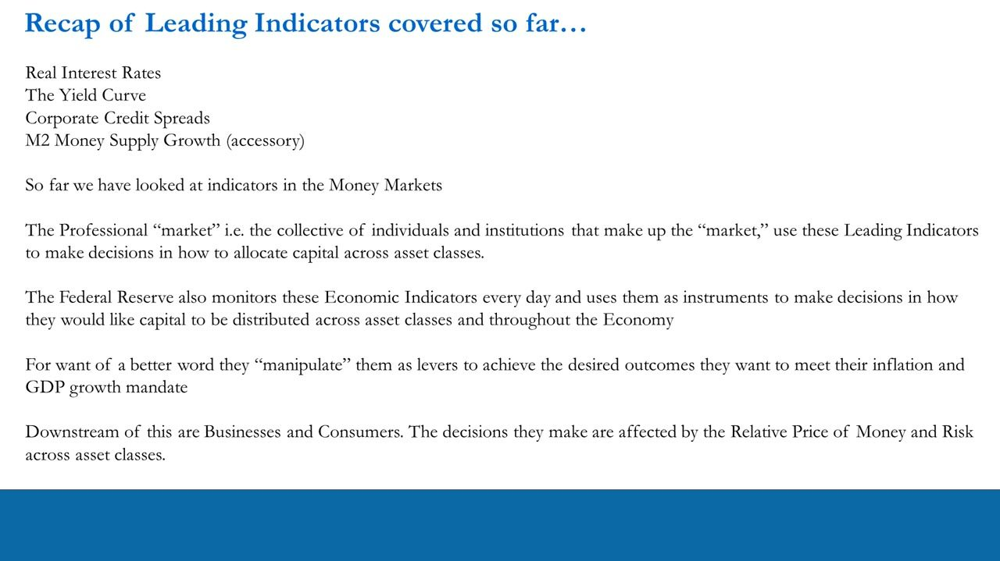
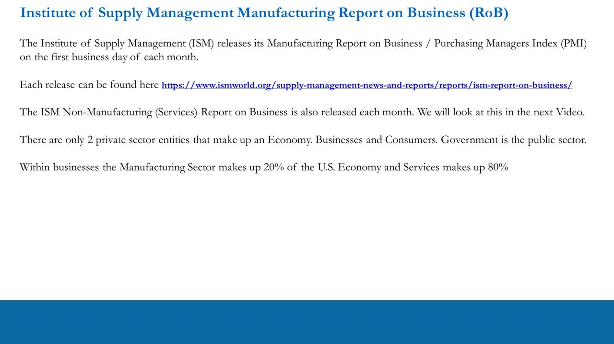
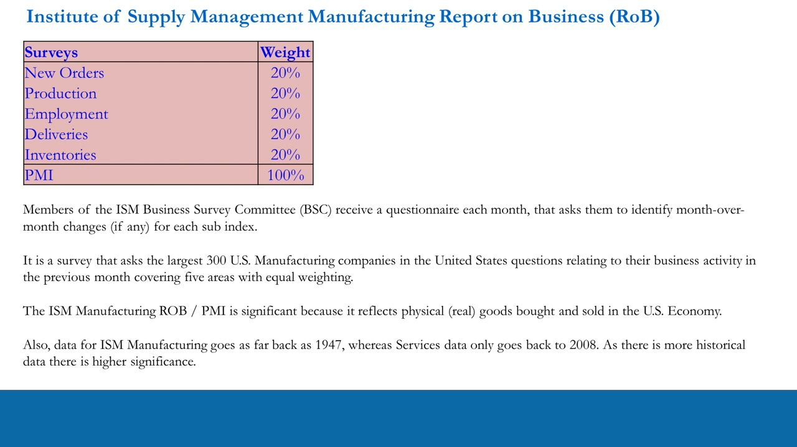
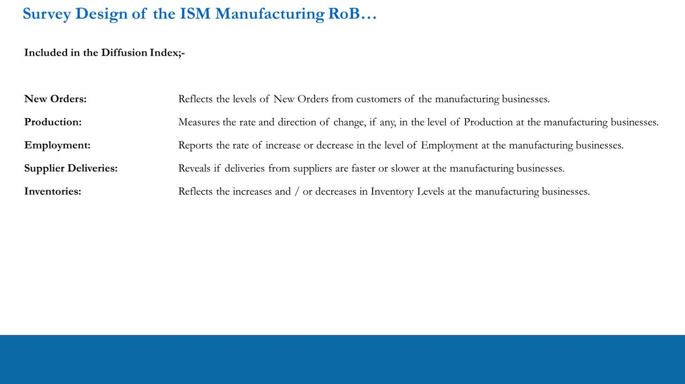
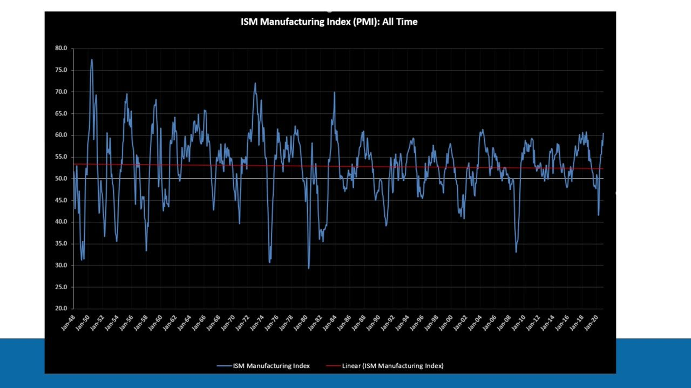
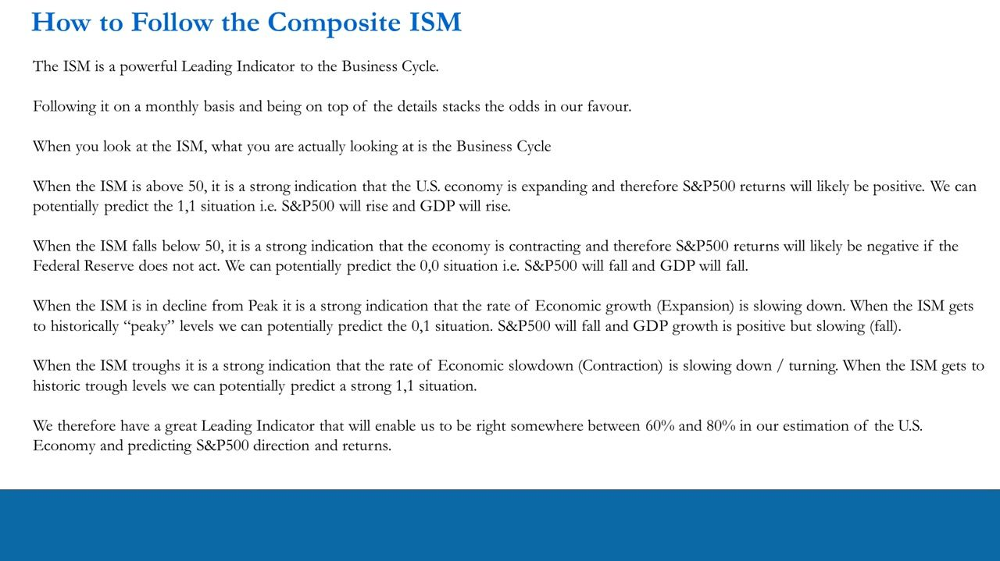
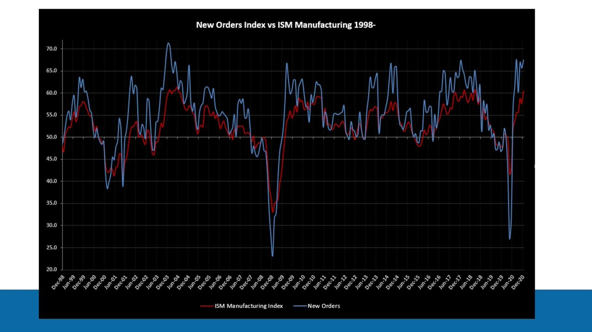
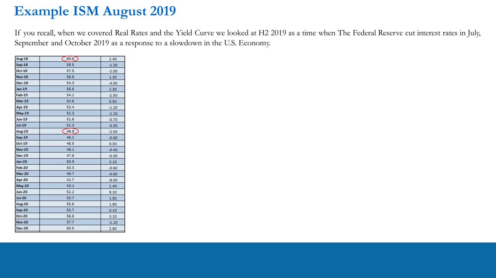
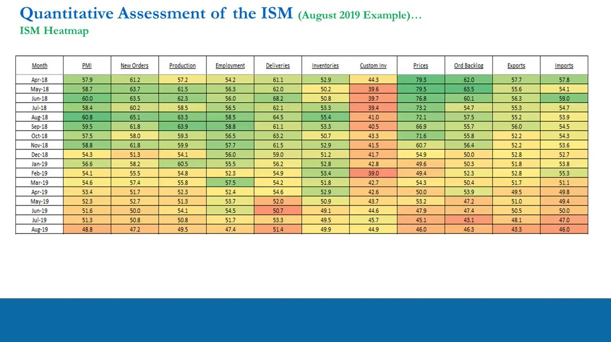
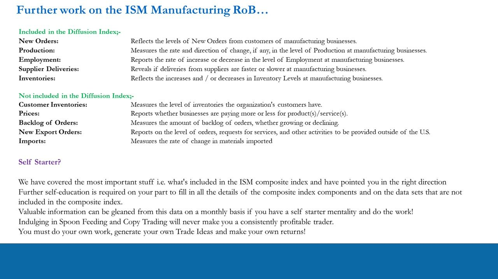

The ISM Manufacturing PMI
Reading the business-survey diffusion index against the 50 line to predict GDP and the S&P 500
The ISM Manufacturing PMI is a monthly survey diffusion index where above 50 signals expansion and below 50 contraction, letting you predict US GDP and S&P 500 direction 60-80% of the time.
The gist
- Surveys are the one leading indicator the Fed cannot manipulate and cannot be traded directly, but they reveal which way the macro wind is blowing.
- The ISM Manufacturing Report on Business is released on the first business day of each month, compiled from the ~300 largest US manufacturers.
- The PMI is a diffusion index: 50 = no change, above 50 = expansion, below 50 = contraction. Formula: (% increase) + one-half x (% no change).
- Five sub-indices are equally weighted 20% each into the PMI: New Orders, Production, Employment, Deliveries, Inventories. New Orders is the most sensitive; Employment is the slowest.
- Since 1947 the ISM predicts GDP direction ~80% of the time with a 6-12 month lag, and it leads the S&P 500 annual % change by up to ~12 months.
- Signal framework: ISM >50 = LONG (1-1), <50 = SHORT (0-0), declining from peak = NEUTRAL (0-1), troughing = neutral-to-long (rebound).
Recap: money-market indicators so far
- Leading indicators covered so far: Real Interest Rates, the Yield Curve, Corporate Credit Spreads, and M2 Money Supply growth (accessory).
- These are all Money Market indicators.
- The professional market uses them to allocate capital across asset classes; the Fed monitors them daily and 'manipulates' them as levers to meet its inflation and GDP-growth mandate.
- Downstream, businesses and consumers make decisions based on the relative price of money and risk across asset classes.

Surveys: the indicator the Fed can't manipulate
- Unlike real rates, the yield curve, credit spreads and M2, business surveys cannot be directly manipulated by the Fed.
- Surveys are also not tradable instruments.
- They give great insight into the economy and, used with money-market indicators, are a vital part of a trader's systematic process for reading where money is flowing.
- They can also be used as a leading indicator / predictor of Federal Reserve activity. REMEMBER: the Fed is watching too.
You express survey-driven views through tradable instruments like equities, since the survey itself cannot be traded.
The ISM Manufacturing Report on Business
- The Institute of Supply Management (ISM) releases its Manufacturing Report on Business / PMI on the first business day of each month (ismworld.org).
- The ISM Non-Manufacturing (Services) Report on Business is released monthly too and is covered in the next lesson.
- An economy has two private-sector entities, Businesses and Consumers; Government is the public sector.
- Within businesses, Manufacturing makes up 20% of the US economy and Services makes up 80%.

Composition and weighting
- Five equally weighted sub-indices make up the PMI: New Orders 20%, Production 20%, Employment 20%, Deliveries 20%, Inventories 20% = PMI 100%.
- ISM Business Survey Committee members receive a monthly questionnaire asking them to identify month-over-month changes for each sub-index.
- The survey covers the ~300 largest US manufacturing companies across five equally weighted areas.
- It is significant because it reflects physical (real) goods bought and sold, and its data goes back to 1947 (Services only to 2008), giving it higher statistical significance.

Survey design: what's in the diffusion index
- Included in the diffusion index: New Orders, Production, Employment, Supplier Deliveries, Inventories.
- Not included: Customer Inventories, Prices, Order Backlog, Exports & Imports.
- New Orders = level of new orders from customers; Production = rate/direction of change in production; Employment = increase/decrease in employment.
- Supplier Deliveries = whether deliveries are faster or slower; Inventories = increases/decreases in inventory levels.

PMI all-time: mean-reverting around 50
- The PMI oscillates cyclically around the ~50 expansion/contraction line from 1948 to 2020.
- Early peak ~77 (1950-51); deep troughs ~30 (mid-1970s), ~29 (1980), and ~33-35 in the 2008-09 GFC.
- COVID-2020 collapsed to ~41-42 then rebounded to ~60.
- The linear trendline is essentially flat (~52-53), confirming the PMI is mean-reverting around 50.
Historical peaks sit around 60, troughs around 40-45, with the GFC an outlier bottoming near 32.5-35.

How to follow the composite ISM (signal framework)
- When you look at the ISM you are actually looking at the Business Cycle.
- Above 50: economy expanding, S&P returns likely positive - predict the 1-1 situation (S&P rises, GDP rises).
- Below 50: economy contracting, S&P returns likely negative if the Fed does not act - predict the 0-0 situation (S&P falls, GDP falls).
- Declining from peak: rate of growth slowing - predict the 0-1 situation (S&P falls, GDP positive but slowing).
- At a trough: rate of contraction slowing/turning - predict a strong 1-1 rebound.
- This leaves us right somewhere between 60% and 80% of the time on the US economy and S&P direction.
The mapping to portfolio bias: 1-1 = LONG, 0-0 = SHORT, 0-1 = NEUTRAL, trough = neutral-to-long. We predict direction, never the exact level, and never use the ISM alone.

The sub-indices: New Orders leads, Employment lags
- New Orders is the most sensitive part of the report and the most indicative of growth or contraction; it tracks the headline tightly but at higher amplitude.
- Production will be positive (negative) if New Orders are expanding (contracting).
- Employment is slow-moving, following New Orders and Production - new hires lag months of expansion in orders and production.
- Faster (slower) Supplier Deliveries signal supplier optimism (pessimism) and potential supply-chain problems.
- Inventory increases (decreases) reflect management's optimism (pessimism) about future economic conditions.
The 1998-2020 charts show New Orders and Production running above the headline at peaks and below at troughs, while Employment runs below the headline and turns up later.

Worked example: ISM August 2019
- The headline slid from a 60.8 peak (Aug-18) down through 50 into contraction from Aug-19 (48.8, its first sub-50 print).
- This is consistent with the Fed cutting rates in July, September and October 2019 in response to the US slowdown.
- COVID then collapsed the headline to 41.7 in Apr-20 (-8.0 MoM) before a rebound to 60.5 by Dec-20.
- The August 2019 ISM report showed headline PMI at 49.1, with New Orders (47.2), Production (49.5) and Employment (47.4) all flipping into contraction; the overall economy was still Growing but Slower.
The 2019 slowdown was corroborated by an inverting yield curve (short end above the belly by Aug-19) - showing indicators confirm one another.

Quantitative and qualitative assessment (heatmaps and industries)
- Build a heat-mapped table of the headline PMI and every sub-index month-by-month (green = expansion, red = contraction) to see the roll below 50.
- The ISM report also lists which of the 18 manufacturing industries reported growth vs contraction, in ranked order.
- Qualitative colour: use the contracting-industry list to find weak single-stock shorts (e.g. Transportation Equipment / Greenbrier vs a rising SPY in 2019).
- Read the verbatim respondent comments (the 'Industry Comments' tab) behind the numbers for context.
Combine the quantitative heatmaps with the qualitative industry rankings and respondent quotes to turn the macro signal into single-stock trade ideas.

Further work and summary
- Not-included series still worth studying: Customer Inventories, Prices, Backlog of Orders, New Export Orders, Imports.
- The lesson covers what's included in the composite; the rest requires self-education - do your own work, don't copy-trade.
- The ISM helps predict (leading): bond-market liquidity and money flows, stock-market direction/liquidity/volatility, and Fed policy (pre-emptive).
- It also relates to (lagging): Inflation, corporate earnings outlook, and Economic Growth (GDP).

Glossary
- ISM Manufacturing PMIThe headline Purchasing Managers Index from the Institute of Supply Management's Manufacturing Report on Business, released the first business day of each month from a survey of the ~300 largest US manufacturers.
- Diffusion indexAn index measuring how dispersed a change is across a sample. Respondents answer increased / decreased / no change; index = (% increase) + one-half x (% no change). 50 = no change, above 50 = expansion, below 50 = contraction. Example: 20% better, 70% same, 10% worse = 20% + (0.5 x 70%) = 55%.
- The 50 lineThe expansion/contraction threshold. A reading of 50 means no change vs the prior month; above 50 is expansion, below 50 is contraction.
- Sub-indicesThe five equally weighted (20% each) components of the PMI: New Orders, Production, Employment, Supplier Deliveries, Inventories.
- New OrdersThe most sensitive sub-index and the most indicative of growth or contraction; tends to lead and exaggerate the headline PMI's turns.
- 1-1 / 0-0 / 0-1 statesQuadnomial (S&P, GDP) outcomes: 1-1 both rise (ISM >50, go LONG); 0-0 both fall (ISM <50, go SHORT); 0-1 S&P falls while GDP still positive but slowing (ISM declining from peak, go NEUTRAL).
- Report on Business (RoB)The full monthly ISM manufacturing survey report, whose headline number is the PMI.